Rich's digital garden
Issue:016 Poor man's garlic and an urban void
Hello Roadside Picnic subscribers. I am Richard, and this is my newsletter on photography and overlooked spaces.
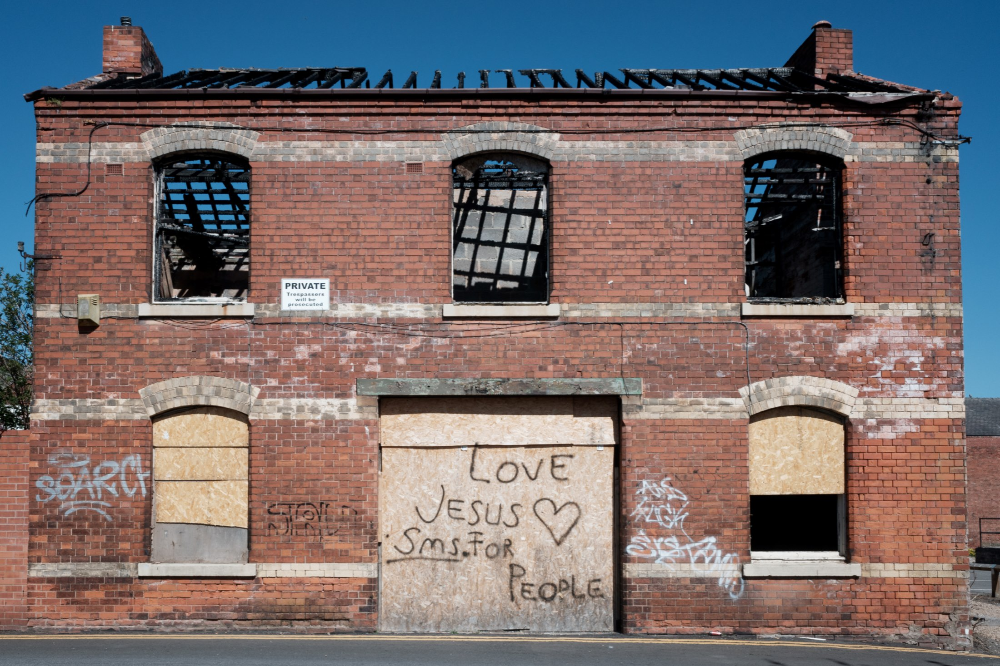derelict building captured on an urban walk
{kind=link}
Garlic Mustard
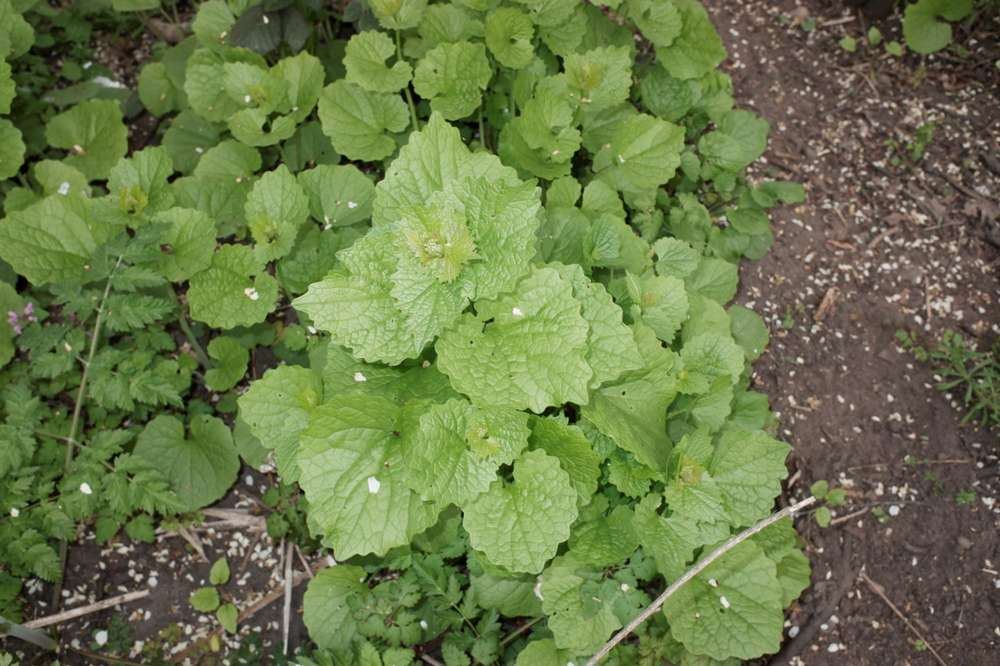Alliaria Petiolata (Garlic Mustard, Jack-by-the-hedge)
{kind=link}
A warm spring morning, the dog and I walk the usual patch of edgelands. It has remained quiet since the lifting of restrictions. I take advantage of the lull in footfall to improve my lacklustre botany identification. Crouching in the shaded undergrowth of a Damson spinney between dog shit and the obnoxious violet flowers of the invasive Greater Periwinkle, I find a modest patch of adolescent Jack-by-the-hedge otherwise known as Garlic Mustard.
I have never given this plant any attention till now. It is an unpretentious weed that blends into its environment with Richard Mabey, in food for free, describing it as "simple in construction".
Following its unassuming appearance, the plant's Garlic moniker is a modest attribute. Unlike pungent Wild Garlic, which is hard to miss when it fills the spring woodland air, Garlic Mustard requires crushing a leaf between the thumb and finger to release a glimmer of garlic scent.
Traditionally it is used as a herb for fish. While contemporary foraging guides designate it as a raw salad leaf. Aside from human appropriation, it is also a food source of the colourful orange-tip butterfly.
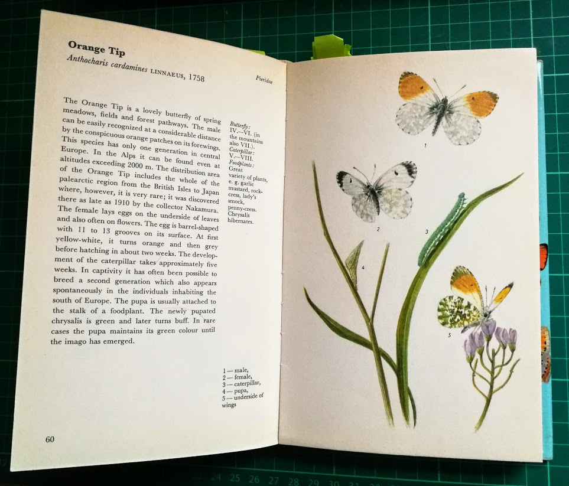Orange tip - A Colour Guide to Familiar Butterflies, Caterpillars and Chrysalides 1974 by Josef Moucha
{kind=link}
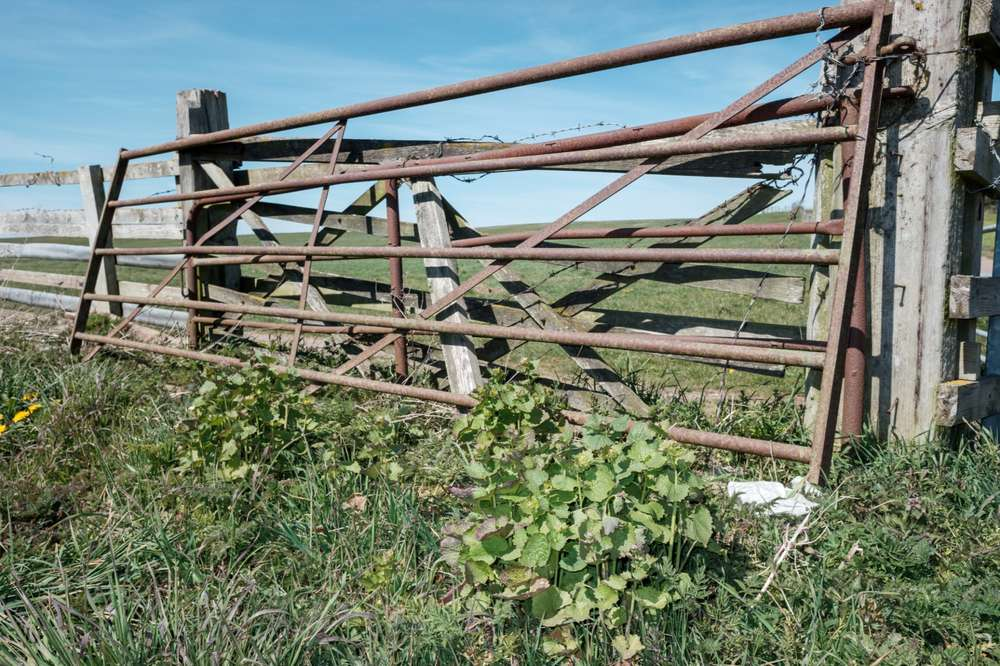Garlic Mustard by a rusted gate
{kind=link}
As a weed: Jack-by-the-hedge thrives in the sheltered margins of hedgerows. Urban environments can provide the same, if not similar, shelter. Consequently, like the weeds discussed in last weeks issue 015, it has an invasive characteristic and is found on brownfield wastelands and car parks.
Field notes from an urban void
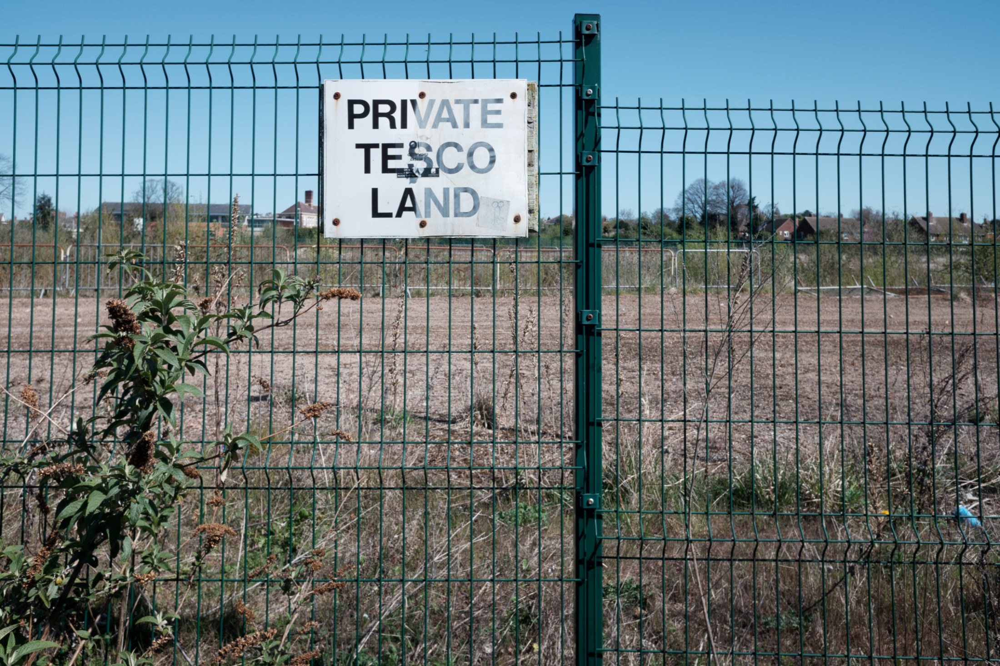A post-industrial terrain vague: once the site of a malt house now resigned to a vacant void through numerous failed attempts at development. The history and timeline of which is a tedious saga of money and bureaucracy.
{kind=link}
A synopsis might include the enclosure of a public right of way, Tesco's anti-competition practices, a leisure complex, a Lidl, and various forms of the local authority rejecting proposals. At the back end of 2019, I considered the site for my MA project, but given the unpredictability of these sites, it required a long term investigation.
Recent plans headed by Lidl were rejected by the council specifying the failing town centre -the hypocrites approved a £21 million retail development on the edge of town. Subsequently, the site is still an enclosed vacant terrain vague.
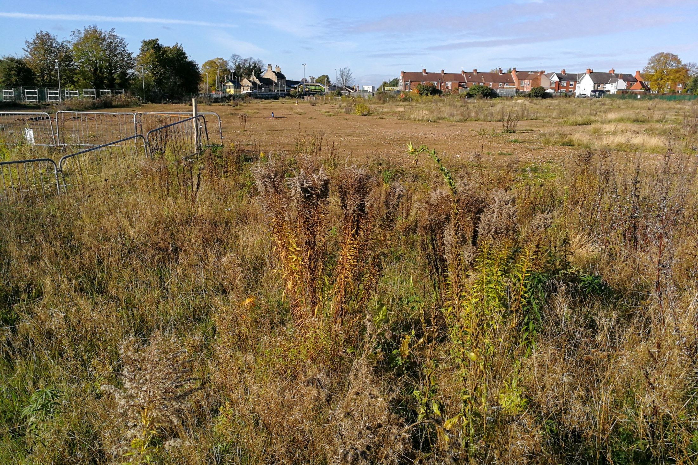2019
{kind=link}
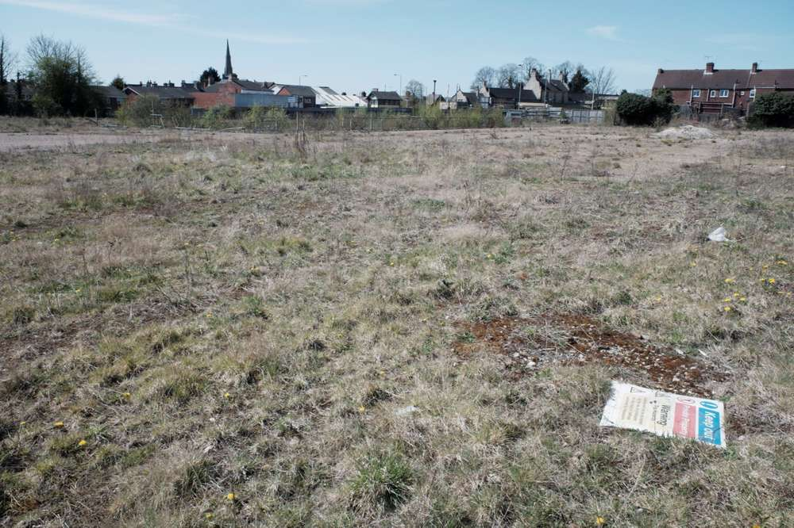2021
{kind=link}
Pre-development: I remember the site as being a grass field with Hawthorn and Goat Willow trees. Sadly, I can't find any photographs of the site as an open space but google earth pro demonstrates the disruption of topography.
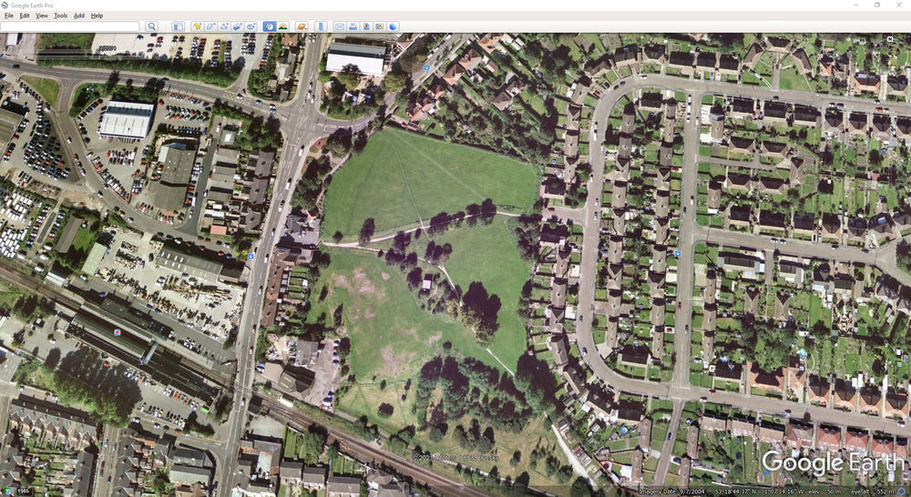Site pre development 2004, small trees, pathways and grass.
{kind=link}
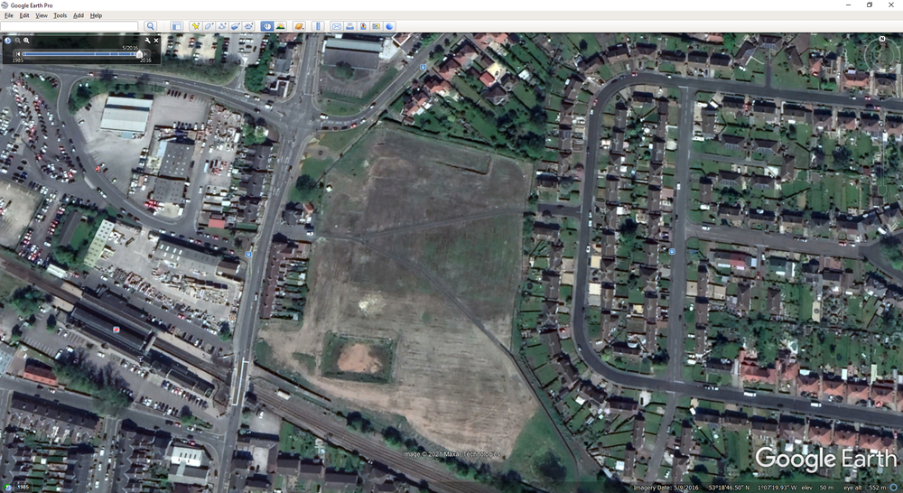Site 2016
{kind=link}
At present: access to the site has been restricted by enclosed narrow pathways unsuitable in any post-covid future. The fences of these pathways are exhibiting signs of damage. With continued neglect, desire paths will appear at the unofficial deviations from the designated pathways initiating the site's return to open space.
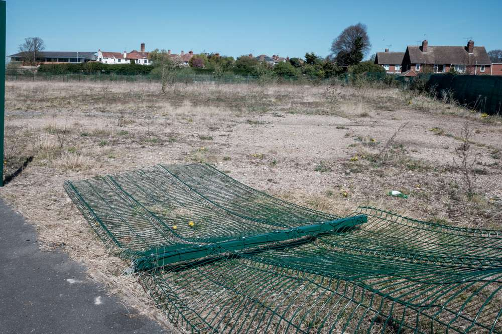Biodiversity: the removal of topsoil and the occasional dousing of herbicides with each proposed development has left the site a desert. Only its margins contain flourishing weeds. Should the site remain a vacant void, it will be interesting if any successional flora will return en masse. An excavation of the presumable malt kiln foundations has formed a large body of water. Inhibited by fencing, it is hard to see if there are any waterfowl. The water sounded still, sadly. On the last visit, I remember hearing the splashing of water as a loud monotonous diesel train approached the station to a sluggish drawn-out halt.
{kind=link}
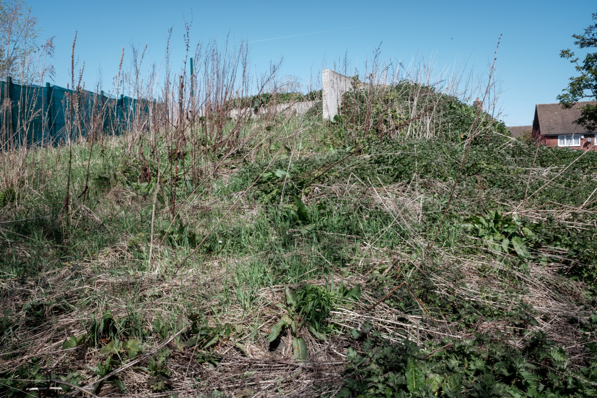A hill of nettles and dock
{kind=link}
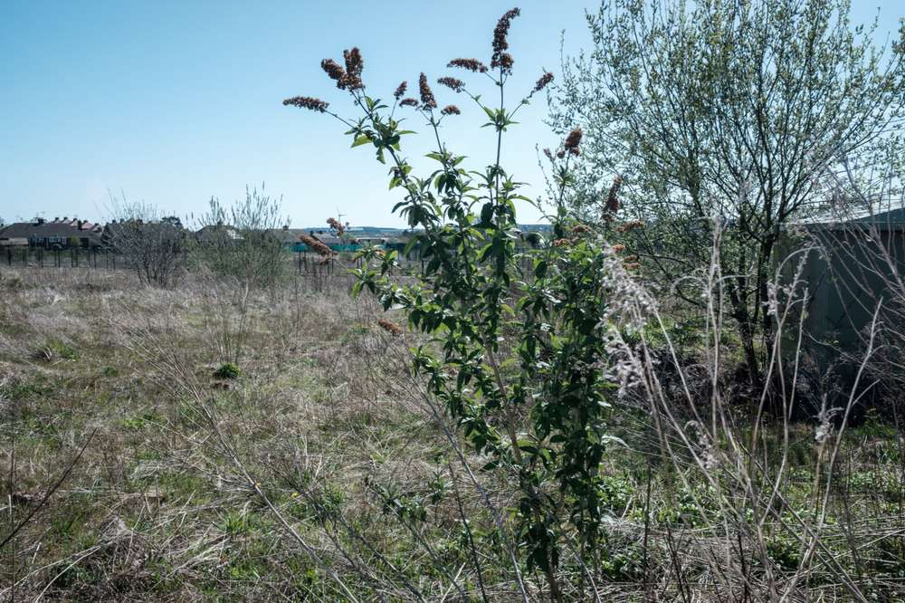No wasteland is complete without a buddleia. Behind it is a goat willow.
{kind=link}
An interstice: between the site and the railway is an urban wilderness of ivy and bramble within an enclosed space. By restricting access, these leftover spaces are unintentional nature reserves. Left to a natural agency, they host successional plant and animal life prospering without direct human intervention (passing trains and line maintenance can be argued as a passive but deadly invasion).
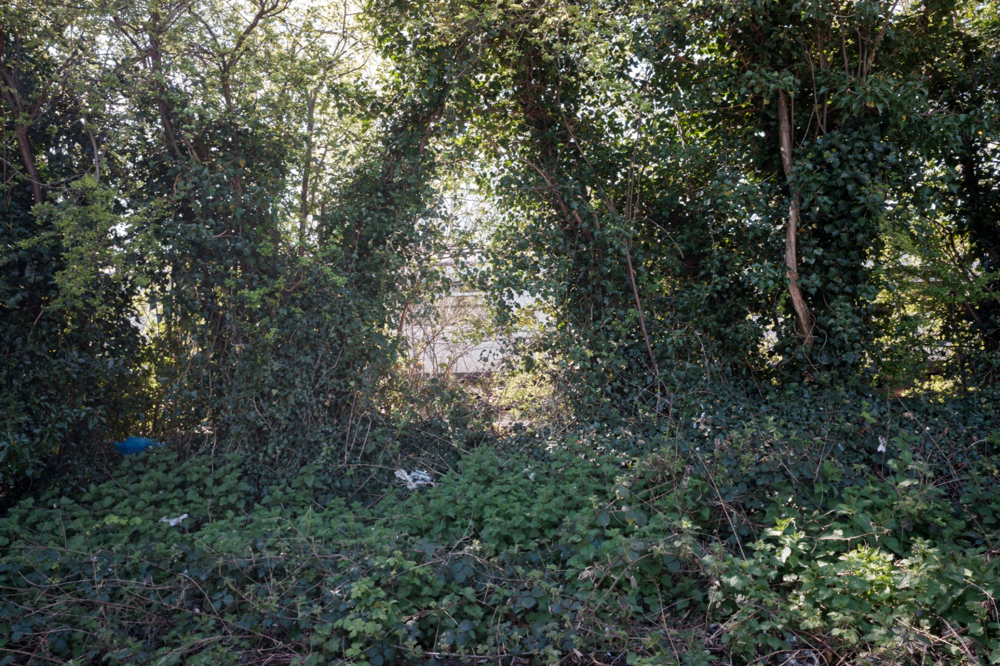Railway interstice with a train passing behind.
{kind=link}
Bookmarks
Thanks for reading! Till next week.
This article is from my newsletter. Consider subscribing, it's free and weekly.
Created
25/04/2021
Topics
Roadside Picnic
Weeds
Terrain Vague